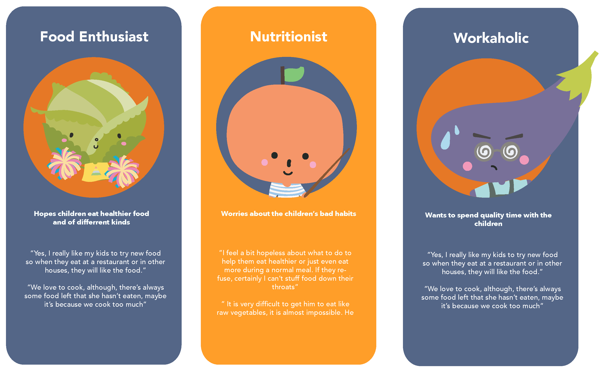
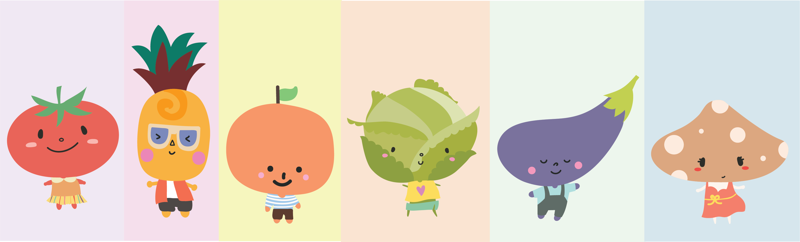

About the project
In 2019, I attended an interaction design studio in Milan, Italy. During the workshop, we were assigned to design and prototype a digital service or interative application. Our professors gave us a theme to explore - for the children.
My teammate and I tried to brainstorm and research on existing problems for the children nowadays, as well as their needs in regards of the rapid development of our society. Eventually, we decided to tackle with the basic yet most essential issue - food and nutrition.
Our aims are to promote healthy eating habits amongst children and to educate on the importance of nutrition, as well as food waste and food exploration. On the other hand, we also focus on creating a more enriching family bonding experience.
By doing so, we conducted several interviews with different parents to learn their daily life, struggles and interaction with their children so we would be able to map out the problems and needs of parents and children in terms of nutrition. Eventually, three sets of personas, i.e. Food Enthusiast, Nutritionist and Workaholic were created from our results.
Insights
• Children rely too heavily on technology for entertainment during mealtimes.
• Children become impatient and misbehave around mealtimes due to hunger, which makes meal
preparation harder for parents
• Parents don’t know how to prepare vegetables in a way, which appeals to children to eat.
MealMate
Based on these insights, we decided to create a digital application - MealMate
For this application, we created different versions for both parents and children individually. A wide healthy selection of recipes can be chosen by both parents and children on their own devices. Each recipe will be shown with step-by-step photos. Grocery list, daily reminder and photo gallery to record the process or any nice memories also come along in this application. In order to encourage children to intake more healthy food and to be more engaging among meal preparation, we presented the food as in a cartoonized way, for example a combination of kiwi and grapes to be turtle!
For the children version, we creates a set of MealMate characters to be narrator and guide the child through the whole experience.
 Technology can be empowering for children and help learning in fun and engaging ways. However, it could also create negative consequences if it is not properly used. We often see children heavily rely on mobile devices a lot nowadays. Therefore, one of the most important concepts in our application is to balance the usage duration. Parents are able to choose a time duration to lock the device during mealtime.Storyboard
Click to see the storyboard